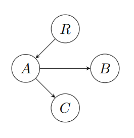
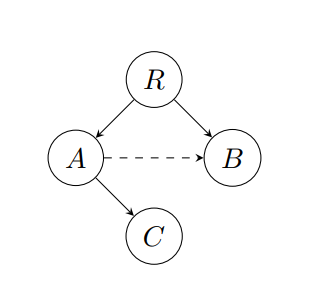
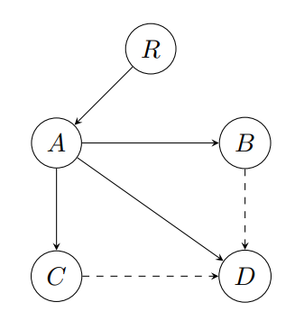

This paper introduces an approach to quantify redundancy in a certain class of directed graphs by comparing the Shannon entropy of simple‐path distributions with the maximal entropy achieved by a tree structure. By defining an energy filtration based on the length of the shortest simple path from a unique root, we derive a filtered entropy measure that highlights how alternative pathways affect network uncertainty. Applications to ecological food webs are discussed.
Understanding redundancy in complex networks is critical to unraveling their resilience and structural properties. In many real-world systems—such as ecological food webs, communication networks, and supply chains—redundant pathways provide alternative routes that can safeguard the system against disruptions. This paper introduces a novel approach to quantify network redundancy through a filtered Shannon entropy framework, bridging theoretical insights from information theory with tangible biological implications.
We consider a directed graph \( G = (V,E) \) that is finite, connected, and features a unique root vertex \( R \) (with in-degree zero) such that every other vertex in \( V \) is reachable from \( R \) via at least one simple path. The energy of each vertex is defined as the length of its shortest simple path from \( R \), which naturally induces a filtration of the graph:
$$G(k) = \{ v \in V : \mathcal{E}(v) \leq k \}$$
This energy‐based perspective allows us to progressively reveal the network's structure and to investigate how alternative pathways—embodied in redundant edges—emerge as the system unfolds.
At each energy level \( k \), we derive a probability distribution on \( G(k) \) based on the counts of distinct simple paths from \( R \). In a tree, where each vertex is reached by a unique path, the distribution is uniform and the entropy is maximized:
$$H_{\text{Tree}}(k) = \log |G(k)|$$
However, in the presence of redundant links, multiple paths converge on the same vertices, skewing the distribution and lowering the observed entropy \( H_G(k) \). We capture this deviation by defining the redundancy measure
$$\phi_G(k) = H_{\text{Tree}}(k) - H_G(k).$$
Beyond its mathematical elegance, our framework has important biological implications. In ecological food webs, redundant pathways can facilitate multiple routes for energy and nutrient transfer, effectively buffering the ecosystem against species loss or environmental disturbances.
In this section, we review key concepts from network theory and information theory that form the basis for our study of redundancy in food web graphs. We focus in particular on the role of redundant edges—those that do not lie on the shortest simple paths from the root vertex through its predecessors—in shaping the uncertainty and resilience of these networks.
Network Theory, Directed Graphs, and Redundancy
Graph theory offers a flexible framework for modeling complex systems such as ecological food webs. Here, a food web is represented as a directed graph \( G = (V,E) \), where vertices \( V \) denote species (or trophic groups) and directed edges \( E \) represent feeding relationships. A common special case is the tree, a connected acyclic graph in which each vertex (except a unique root \( R \)) is reached by a single simple (non‐repeating) path. This tree structure serves as a benchmark because it guarantees a uniform distribution of paths from the root, thereby maximizing the network's Shannon entropy.
In contrast, many real-world food webs contain redundant edges—additional connections that do not participate in the shortest simple paths from \( R \). These edges create alternative pathways between vertices, meaning that some species can be reached by more than one route.
Shannon Entropy and Path Distributions
Shannon entropy, introduced by Claude Shannon, quantifies the uncertainty in a probability distribution. In the context of a food web, we derive a probability distribution from the counts of distinct simple paths from the unique root \( R \) to each vertex \( v \). In a tree, where each vertex is accessible via a unique route, the distribution is uniform and the entropy is maximized:
$$H_{\text{Tree}}(k) = \log |G(k)|.$$
However, when redundant edges are present, some vertices are reached via multiple distinct paths. If we denote by \( Q(v) \) the number of simple paths from \( R \) to \( v \) and by
$$T(k) = \sum_{v \in G(k)} Q(v)$$
the total number of paths within the subgraph \( G(k) \), the probability of reaching vertex \( v \) becomes
$$p_v^{(k)} = \frac{Q(v)}{T(k)}.$$
Redundancy Measure and Ecological Implications
We quantify the loss in entropy due to redundant edges by defining a redundancy measure:
$$\phi_G(k) := H_{\text{Tree}}(k) - H_G(k).$$
A value of \( \phi_G(k) = 0 \) indicates a tree-like structure with no redundant links, while \( \phi_G(k) > 0 \) signifies that redundancy is present. In ecological terms, these redundant pathways can provide alternative routes for energy and nutrient flows, potentially conferring resilience to the ecosystem.
Graph Model and Definitions
Let \( G = (V,E) \) be a finite, connected, directed graph with a unique vertex \( R \) of in-degree zero, such that there is at least one simple path from \( R \) to every vertex \( v \in V \). In order to analyze the structure of \( G \) progressively, we define the energy of a vertex \( v \), denoted \( \mathcal{E}(v) \), as the length of the shortest simple path from \( R \) to \( v \). This energy concept provides a natural filtration of the graph:
$$G(k) = \{ v \in V : \mathcal{E}(v) \leq k \}.$$
Path Counting and Probability Distributions
For each vertex \( v \in G(k) \), let \( Q(v) \) denote the number of distinct simple paths from \( R \) to \( v \) that lie entirely within \( G(k) \). In a tree structure, we have \( Q(v) = 1 \) for every \( v \), as there is exactly one simple path from \( R \) to each vertex. However, in graphs with redundant links, some vertices may be reachable via multiple paths.
Define the total number of simple paths within \( G(k) \) as:
$$T(k) = \sum_{v \in G(k)} Q(v).$$
This allows us to define a probability distribution on the vertices of \( G(k) \) by setting:
$$p_v^{(k)} = \frac{Q(v)}{T(k)}.$$
Shannon Entropy in Graphs
Using the probability distribution \( \{p_v^{(k)}\}_{v \in G(k)} \), the Shannon entropy at energy level \( k \) is defined as:
$$H_G(k) = -\sum_{v \in G(k)} p_v^{(k)} \log\left(p_v^{(k)}\right).$$
For a tree-like graph, where every vertex is reached by a unique path, the maximum possible entropy is:
$$H_{\text{Tree}}(k) = \log |G(k)|.$$
Finally, the redundancy measure is given by:
$$\phi_G(k) = H_{\text{Tree}}(k) - H_G(k).$$
Example 1: Directed Tree

Consider a simple directed tree with vertices \( \{R, A, B, C\} \) and edges:
$$R \to A,\quad A \to B,\quad A \to C.$$
In this tree, every vertex (except \( R \)) is reached by exactly one simple path, yielding a uniform distribution of paths.
Defining the energy as the length of the shortest path, we have:
$$\mathcal{E}(R)=0,\quad \mathcal{E}(A)=1,\quad \mathcal{E}(B)=2,\quad \mathcal{E}(C)=2.$$
With \( G(2)=\{R,A,B,C\} \) and \( Q(v)=1 \) for all \( v \), the total number of paths is \( T(2)=4 \) and the probability is \( p_v = \frac{1}{4} \) for each vertex. Thus, the filtered Shannon entropy is:
$$H_G(2) = \log 4,$$
matching the maximal entropy, so \( \phi_G(2)=0 \).
Example 2: Graph with a Redundant Link

Now consider a graph with vertices \( \{R, A, B, C\} \) and edges:
$$R \to A,\quad A \to B,\quad A \to C,\quad R \to B.$$
Here the edge \( R \to B \) makes the path \( R \to A \to B \) redundant. For \( k=1 \) the subgraph \( G(1)=\{R, A, B\} \) has path counts \( Q(R)=1 \), \( Q(A)=1 \) (via \( R \to A \)), and \( Q(B)=2 \) (via \( R \to B \) and \( R \to A \to B \)). Thus, \( T(1)=4 \) and the probability distribution becomes:
$$p_R=\frac{1}{4},\quad p_A=\frac{1}{4},\quad p_B=\frac{1}{2}.$$
The filtered entropy is then
$$H_G(1) \approx 1.0397,$$
while the maximal (tree) entropy for 3 vertices is \( \log 3 \approx 1.098 \). Thus, \( \phi_G(1) \approx 1.098 - 1.0397 \).
Example 3: Larger Network with a Critical Hub

Consider a network with vertices \( \{R, A, B, C, D\} \) and edges:
$$R \to A,\quad A \to B,\quad A \to C,\quad B \to D,\quad C \to D,\quad A \to D.$$
Here the edges \( B \to D \) and \( C \to D \) are redundant. With energies \( \mathcal{E}(R)=0 \), \( \mathcal{E}(A)=1 \), \( \mathcal{E}(B)=2 \), \( \mathcal{E}(C)=2 \), and \( \mathcal{E}(D)=2 \), and with \( Q(D)=3 \) from three distinct paths, the total path count is \( T(2)=7 \) and the resulting entropy is
$$H_G(2) \approx 1.47.$$
Since the maximal entropy for 5 vertices is \( \log 5 \approx 1.609 \), the redundancy measure is \( \phi_G(2) \approx 1.609 - 1.47 \).

In this section, we analyze a food web graph (as in Figure~\\ref{consumer} from Allesina et al.) with vertices
$$V = \{R,\, A,\, B,\, C,\, D,\, E\},$$
and directed edges as listed:
- Edge 1: \( R \to A \)
- Edge 2: \( R \to B \)
- Edge 3: \( B \to A \) (redundant)
- Edge 4: \( A \to C \)
- Edge 5: \( B \to E \)
- Edge 6: \( D \to B \) (redundant)
- Edge 7: \( C \to D \)
- Edge 8: \( C \to E \)
- Edge 9: \( D \to E \) (redundant)
The energies are computed as:
$$\mathcal{E}(R)=0,\quad \mathcal{E}(A)=1,\quad \mathcal{E}(B)=1,\quad \mathcal{E}(C)=2,\quad \mathcal{E}(E)=2,\quad \mathcal{E}(D)=3.$$
The number of distinct simple paths \( Q(v) \) from \( R \) to each vertex is as follows:
- \( Q(R)=1 \)
- \( Q(A)=2 \) (via \( R \to A \) and \( R \to B \to A \))
- \( Q(B)=1 \) (via \( R \to B \))
- \( Q(C)=2 \) (via \( R \to A \to C \) and \( R \to B \to A \to C \))
- \( Q(D)=2 \) (via \( R \to A \to C \to D \) and \( R \to B \to A \to C \to D \))
- \( Q(E)=6 \) (six distinct simple paths)
The total number of paths is:
$$T = 1 + 2 + 1 + 2 + 2 + 6 = 14.$$
Hence, the probability for each vertex is:
$$p(R)=\frac{1}{14},\quad p(A)=\frac{2}{14},\quad p(B)=\frac{1}{14},\quad p(C)=\frac{2}{14},\quad p(D)=\frac{2}{14},\quad p(E)=\frac{6}{14}.$$
The Shannon entropy is then computed as:
$$H_G = -\sum_{v \in V} p(v) \log p(v) \approx 1.5746,$$
while the maximum entropy (for a tree with 6 vertices) is:
$$H_{\text{Tree}} = \log 6 \approx 1.7918.$$
Thus, the redundancy measure is:
$$\phi_G \approx 1.7918 - 1.5746 \approx 0.2172.$$
These calculations show that the presence of redundant links skews the probability distribution of paths and lowers the observed entropy relative to a non-redundant, tree-like network.
- Shannon, C. E. (1948). A Mathematical Theory of Communication. Bell System Technical Journal, 27, 379–423.
- Paine, R. T. (1966). Food web complexity and species diversity. American Naturalist, 100(910), 65–75.
- Dunne, J. A., Williams, R. J., & Martinez, N. D. (2002). Food-web structure and network theory: The role of connectance and size. Proceedings of the National Academy of Sciences, 99(20), 12917–12922.
- Allesina, S., & Tang, S. (2012). Stability criteria for complex ecosystems. Nature, 483(7388), 205–208.
- Allesina, S., Bodini, A. & Pascual, M. (2009). Functional links and robustness in food webs. Philosophical Transactions of the Royal Society B, 364, 1701–1709.